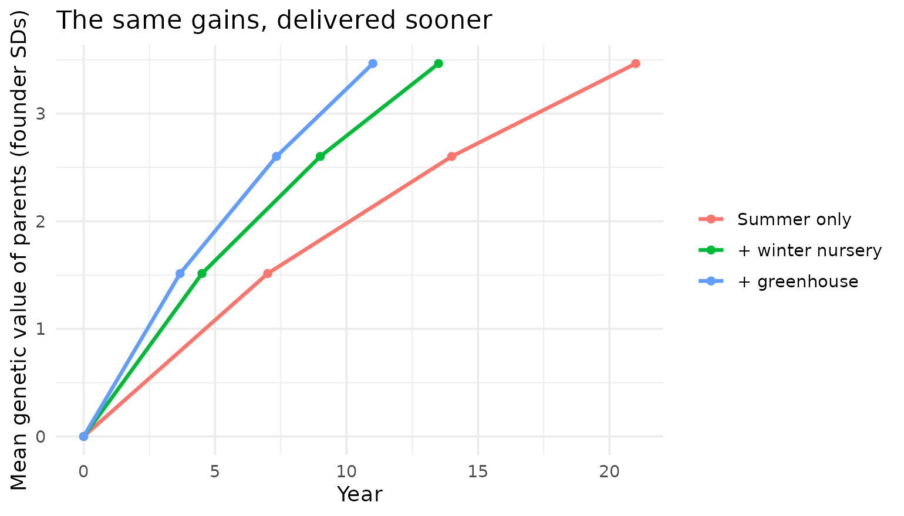
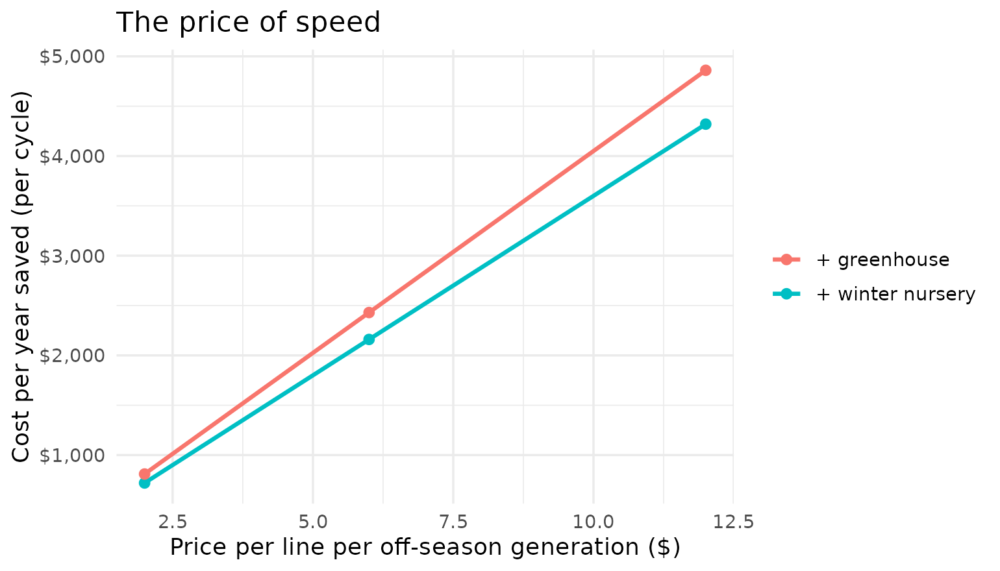

A winter nursery, such as one in Puerto Rico for a US soybean program, adds a second generation each year. A greenhouse can add a third. Lines reach the yield trials sooner, so each breeding cycle takes fewer years. Each off-season generation costs money, though: shipping, fees, labor and greenhouse space. Is the speed worth the cost?
This article measures what the extra generations buy, then puts a price on it.
Three speeds
We run the same pipeline for three cycles with one, two or three nursery generations a year, and record every year as it goes:
pipeline <- line_pipeline(
generations_per_year = tune(),
n_crosses = 30, progeny_per_cross = 15, n_ayt = 80, n_parents = 20, cycles = 3,
founders = asr_founders(n_chr = 10, seg_sites = 100)
)
res <- tune_grid(
pipeline,
resamples = sim_replicates(12, seed = 1),
grid = data.frame(generations_per_year = 1:3),
metrics = sim_metric_set(release_gain, gain_per_year, years),
control = control_sim(save_outcomes = TRUE)
)
collect_metrics(res, type = "wide")[, c("generations_per_year", "release_gain", "release_gain_se",
"years", "gain_per_year")]
#> # A tibble: 3 × 5
#> generations_per_year release_gain release_gain_se years gain_per_year
#> <int> <dbl> <dbl> <dbl> <dbl>
#> 1 1 3.74 0.131 21 0.178
#> 2 2 3.74 0.131 13.5 0.277
#> 3 3 3.74 0.131 11 0.340Look at release_gain: it is identical for the
three speeds. In this pipeline the nursery changes when things happen,
not what happens. The same crosses, the same lines and the same
selections occur, just sooner. Because every design runs on the same
seeds, the simulation shows this exactly rather than burying it in
noise. What changes is time, and so gain per year:
traj <- collect_trajectories(res)
avg <- aggregate(mean ~ generations_per_year + year, data = traj, FUN = mean)
avg <- rbind(data.frame(generations_per_year = 1:3, year = 0, mean = 0), avg)
avg$speed <- factor(avg$generations_per_year, labels = c("Summer only", "+ winter nursery", "+ greenhouse"))
ggplot(avg, aes(year, mean, colour = speed)) +
geom_line(linewidth = 1) + geom_point() +
labs(x = "Year", y = "Mean genetic value of parents (founder SDs)", colour = NULL,
title = "The same gains, delivered sooner")
What a year costs
Each cycle makes 450 lines, and every off-season generation is grown for each of them. With F5-derived lines, two generations a year puts 2 of the 5 nursery generations in the off-season and three a year puts 3 there. Here is the extra cost per cycle, and per year saved, for three prices per line per off-season generation:
lines_per_cycle <- 30 * 15
speeds <- data.frame(option = c("+ winter nursery", "+ greenhouse"), generations_per_year = 2:3)
speeds$offseason_generations <- 5 - ceiling(5 / speeds$generations_per_year)
speeds$years_saved_per_cycle <- 5 / 1 - 5 / speeds$generations_per_year
costs <- merge(speeds, data.frame(price = c(2, 6, 12)))
costs$extra_cost_per_cycle <- costs$offseason_generations * lines_per_cycle * costs$price
costs$cost_per_year_saved <- costs$extra_cost_per_cycle / costs$years_saved_per_cycle
costs[order(costs$option, costs$price), ]
#> option generations_per_year offseason_generations
#> 2 + greenhouse 3 3
#> 4 + greenhouse 3 3
#> 6 + greenhouse 3 3
#> 1 + winter nursery 2 2
#> 3 + winter nursery 2 2
#> 5 + winter nursery 2 2
#> years_saved_per_cycle price extra_cost_per_cycle cost_per_year_saved
#> 2 3.333333 2 2700 810
#> 4 3.333333 6 8100 2430
#> 6 3.333333 12 16200 4860
#> 1 2.500000 2 1800 720
#> 3 2.500000 6 5400 2160
#> 5 2.500000 12 10800 4320line_pipeline() does this accounting itself when you set
offseason_cost, and adds it to cost.
Making the call
The simulation has turned the question into a single number for each option: dollars per year saved. Whether that is worth paying depends on what a year is worth to your program. That could be the value of releasing a variety a year earlier, of responding sooner to a new disease, or of the extra cycles completed over a career. The simulation cannot decide that for you, but it makes the trade explicit.
ggplot(costs, aes(price, cost_per_year_saved, colour = option)) +
geom_line(linewidth = 1) + geom_point(size = 2) +
scale_y_continuous(labels = function(x) paste0("$", format(x, big.mark = ","))) +
labs(x = "Price per line per off-season generation ($)", y = "Cost per year saved (per cycle)",
colour = NULL, title = "The price of speed")
When the nursery changes more than timing
Here the nursery only moved events earlier, so its value is all about time. Simulation earns its keep when speed also changes the genetics. Two examples:
-
More cycles in a fixed horizon. Set
cyclesso each option fills the same number of years. Faster programs then complete more cycles, and the gains compound. -
Overlapping cycles. Real programs start new crosses
every year and recycle parents from earlier trials.
line_pipeline()runs cycles one after another. To model overlapping cycles, write the program withalphasim_program()and compare it with this one in asim_set().